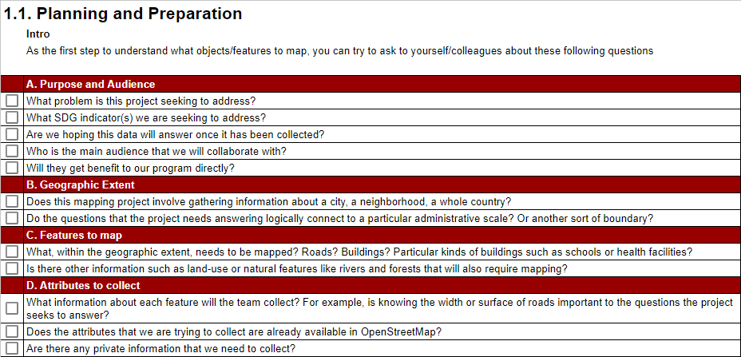

1.1 Defining Needs and Requirements
Course Objectives
This section includes guiding questions and considerations that Project Managers and OSM communities should take into account when beginning a project, by the end of this section, you should be able to:
- Understand factors to consider when deciding needs and requirement
- Learn how to build the team
- Learn how to collaborate with community
Learning Activities
When starting a mapping project, it is important to define the scope of the project and understand the larger context in which the data is needed, this includes understanding how to work with local stakeholders and how the data will impact them.
Planning and Preparation
The first step that you must take before designing a field mapping project is to decide what object/features to map. All data collected needs to fulfill a specific purpose with an intended use case and/or audience. This not only defines the scope of the project and data collected but helps ensure that the data collection process is ethical and limits the burden on individuals and communities being surveyed, even if indirectly. A helpful way to think about this is by trying to ask these questions:

Source: Activity Sheet: Deciding What to Map
The answers to these questions will help determine if there are any existing datasets that could be used and the amount of time and resources necessary to complete the project. In some cases, it can be helpful to run a small pilot project in order to determine the best approach to data collection and develop an estimate of the level of effort required.
To collect good data you need to employ a well-defined data model. A data model reflects the information you want to capture. After establishing a solid data model, it is important to create logical Field Data Collection Forms that capture the data you are looking for in the best way.
Example SDG data models for OpenStreetMap can be found in Chapter 2
Coordinate with the Local Administration
In many cases, mapping teams will need to carry an authorization letter or another form of permission from local officials to show credibility and to reduce potential conflict that could arise during the field data collection. We recommend that organizations and communities should request this letter from the appropriate authorities well ahead of planned mapping activities to reduce the risk of delay.
Identifying and contacting partner organizations working locally in the area that you are planning to map is critical to ensuring local buy-in, project success, and sustainability. While contacting these can be done via email or a letter detailing your intent, in-person meetings have more weight and provide opportunity to develop a stronger relationship.
Building a Mapping Team
In most cases, non-governmental organizations and governmental agencies will draw mappers from within their own teams. However, organizations should consider the benefits of bringing in mappers from partner organizations and local communities. When working within refugee environments, it is especially important to consider incorporating refugees (and host community members) into the mapping process. By incorporating local communities, beneficiaries, and partners in the mapping team, participatory mapping activities:
- Increase local buy-in and representation
- Allow communities to directly represent their needs and values
- Incorporate local knowledge and perspectives that might not otherwise be accessed
- Empower local community members with skill development
| üí° Did you know? üí° |
|---|
| Traditionally the term “beneficiary” has been used only to describe those affected by a crisis. Now it is widely recognized that beneficiaries should also be active participants in determining their own fates. This is also the core of participatory mapping – beneficiaries should be actors and partners in humanitarian projects. |
| Payment | As a general rule it is good practice to cover costs of active participants. For example, if volunteers join your team as field mappers they should be paid per diems to cover transportation and food. Projects rely on the data these volunteers collect, so it is an integral part of the work and should not be treated lightly. Of course unpaid volunteers can and should also be active participants, but organizations must judge when the line is crossed into work to avoid exploitation. Lastly, be mindful that even seemingly small payments can affect power dynamics in refugee communities and households. |
| Gender | Organizations should be sensitive to gender but avoid using it as criteria to determine participants, aligned with the non-discrimination principle. Within families, paying one member but not another can have unintended consequences - either positive or negative. |
When deciding what individuals to work with, the following basic principles should be considered:
| Community | Motivation | Non-discrimination |
|---|---|---|
| Active participation by the affected population is essential to providing assistance that best meets their needs. The first criteria for participant selection is being from the local community. Non-governmental organizations should also consider integrating local and/or national government staff to increase buy-in and data use. Government organizations conducting mapping and survey activities should consider incorporating staff typically outside of geospatial activities as well as staff from non-governmental partner organizations. Regardless, participation from the affected population should be of the highest priority. | Participants should have strong reasons for working. Motivations vary, but one of the strongest factors is being emotionally invested in a project. Feeling like you are making progress in meaningful work is a powerful motivator. | No one should be discriminated against on any grounds of status, including age, gender, race, color, ethnicity, sexual orientation, language, religion, disability, health status, political or other opinion, national or social origin. None of these should be criteria in determining participants. Take into consideration pre-existing social, cultural and political dynamics or practices that may marginalize or exploit certain groups |
After your team is assembled, you also need to train your team in order to make them familiar with the tools you will use. Consider the following tips when training your team:
- Technical literacy - Certain groups will require longer lengths of time to learn an application or tool than others.
- Tools to be used for the project - The tools you use will determine the length of time and skill level demanded of your team. Additionally, the number of tools you plan to train team members in impacts the length of training and time necessary to master a skill or tool.
- Practical session - Training teams in tools using hands-on approaches, including conducting trial fieldwork greatly increases the success rate of mastery and improves data quality. All training should incorporate a practical session if possible.
- Consistent access to internet and electricity - Some tools require internet and computer use for training (i.e. mapping with iD/JOSM).
Community Entry
Community entry is the process of initiating, nurturing and sustaining a relationship in order to secure a community’s participation and interest in a program. Whether preparing to engage with refugee and host communities in a settlement setting or local communities in a capital city, there are a few recommendations and practical questions that can guide your team in mindfully establishing a relationship with a given group and setting the stage for activity implementation in a community.
The most important thing to keep in mind is how individuals can be part of the work as members of projects. They must be given ownership. Before starting a project, objectives and strategy should be shared with community members. They should give feedback, and this should be incorporated. If certain members of the community are not given roles in the project, both in terms of strategy and implementation, you may face problems down the road.
| üí° Did you know? üí° |
|---|
| In the context of working with refugees, for example, who are used to seeing new projects with skepticism, it is especially important that your approach to engage with and inform these groups of the upcoming work is prioritized over activity implementation and achieving results. Many organizations and individuals use humanitarian crises as opportunities to exploit people – whether deliberately or through incompetence. It is crucial to build trust and respect between the organization and community. Though protected under international law, refugees in host countries are subject to municipal and national authorities. The presence of refugees can put pressure on host communities, which often fuels prejudice. Therefore, the final aspect of successful community entry is taking into account the host community’s concerns |
Here are the tips that you can do for community entry:
- Have a consultation meeting to gather feedback from refugees
- Include a community member as part of the team
- Create a WhatsApp group to communicate quickly
- Articulate benefits to host community
- Establish relationships and work through partners already based in the community to ease activity implementation and enable integration into existing initiatives
[Quiz] Check Your Knowledge
1. When you want to plan your first field mapping project, what is the first step that you need to take?
a. Understand the problem that the project trying to solve
b. Define the tools that you will use
c. Prepare template for reports (either monthly or quarterly)
d. Conduct training sessions with government officials and community leaders
2. Why we need to include the local communities, beneficiaries, and partners in our participatory mapping activities:
a. To identify the focal point immediately
b. Because our donor require to work with them
c. To empower local community and understand their needs and values
d. Reduce project budget greatly
Answers: 1. A | 2. C
Activity Checklist
By the end of of this section, you already understand:
- Things to consider when planning and prepare the field project
- Building an effective mapping team
- How to establish effective relationships with community